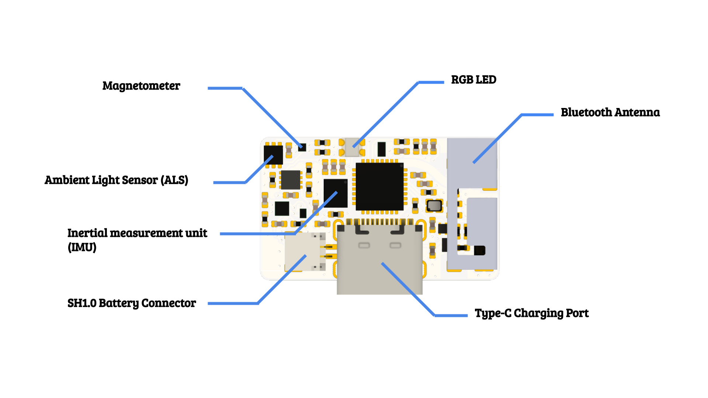

A-Series Sensor

Layout

Technical Specification
General Details
Parameter Size (PCB only) 25mm x 15mm x 4mm Size (with case and battery) 32mm x 35mm x 9mm LED Type RGB LED Communication Interface BLE 5.0, WIFI Charging Interface Type-C USB port Battery Run Time (recording) 4.5 hours Battery Run Time (standby) 1 week Support Battery Type lithium battery (3.7V) Inertial measurement unit (IMU)
Parameter Gyro Noise 3.8 mdps/rt-Hz Gyro Offset Temp Stability ± 20 mdps/degree c Gyro Range ± 2000 dps Gyro Resolution 16-bits Accel Noise 70 ug/rt-Hz Accel Range ± 16 g Accel Resolution 16-bits Max Output Data Rate 8kHz For more details about the command format please refer to the Inertial measurement unit (IMU) section.
Magnetometer
Parameter Full Scale ± 30 G (Gauss) Resolution 20-bits RMS Noise 2 mG Max Output Data Rate 1kHz For more details about the command format please refer to the Magnetometer (MAG) section.
Ambient light sensor (ALS)
Parameter Max Operation Lux 60000 lux Response WaveLength Approximate to human eyes Gain Programmable Integration Time Programmable For more details about the command format please refer to the Ambient Light Sensor (ALS) section.
LED Color Meaning
Different LED color on the sensor have following meaning:
Color Meaning Green power up Blink Red charging battery Blink Yellow BLE advertising Blink Light Blue BLE connected Blink Purple IMU data streaming BLE advertising LED will stop in 10 minute if no connection happen. (Only LED is off, BLE advertising will continue until sensor enter wake-on-motion mode.)
The sensor will have different LED blinking speed under charging mode, depend on the battery volume. From fully charged (blinking period 6s) to empty (blinking period 0.15s).
Wake-On-Motion Mode
Sensor will sleep without motion detected for 15 minutes, now it is under wake-on-motion mode. If any motion is detected under wake-on-motion mode, sensor will power up (LED Green ~1s) again return to BLE advertising mode (LED blinking yellow).